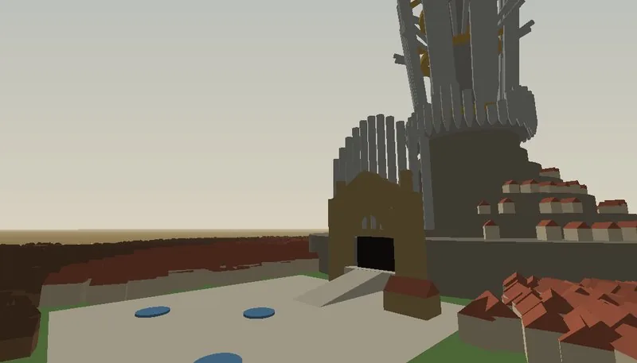
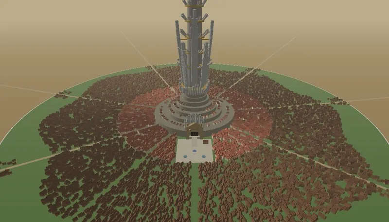
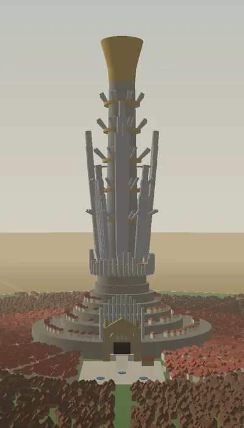
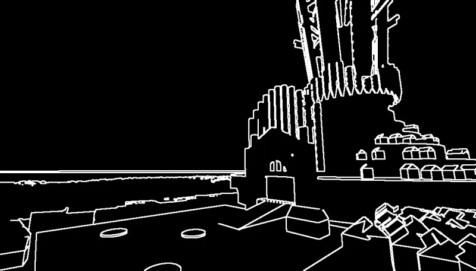

tools/comfy/pipelines/place-key-art.toml · one stage runs at a time, so it fits in 16 GB
−□⋯
the-gateconcept · key-art · for The GateNew
The Gate, with the Tower behind it
▾Brief · built from loreSeen as
lookAn arched portal set into the marble ring, organ pipes above its bay, a stair down to a plaza with two fountains and market stalls. · the-gate · ## Look
notesn1 · open · Keep the Tower visible behind the Gate. — Jann
held back2 truths revealed after T1 · never-truths are never in a brief
▾PromptAIdraft by claude · edit freely
Painterly golden-hour view of an ornate arched stone gate set into a marble ring wall, a bank of organ pipes rising above its bay, a wide stair descending to a sunlit plaza with two round fountains, market stalls and small crowds; behind it the great organ-pipe tower rises out of frame, splayed brass pipes catching the light; warm, lived-in, ancient and sacred.
▸Negativefrom the style · 14 terms
1 · Composecanny of gate-a64 seeds · next
→
2 · Lookpick + 2 style refswaits for a pick
→
3 · Finishdenoise 0.10waits for a pick
→
4 · Upscale · 5 · Grade4K, then colour matchrun on their own
From the Hem map's cameras3

gate-a6 · chosen

hem-a

tower-master
gate-a6 · h 62 m · look h 115 m · fov 66 · wide
Control imagecanny · strength 0.8

Ready
ComfyUI answers; all nodes of the 5 workflows exist.
9 of 9 models found, the darkbrush LoRA included.
Seeds≈ 40 s per seed
each stage lands as concept versions; a pick starts the next stage